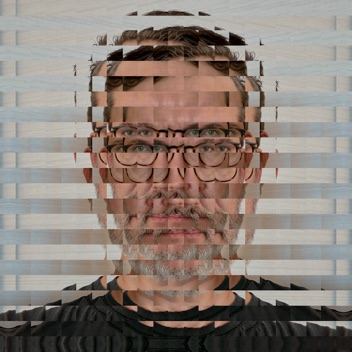

Senior Full Stack Engineer · UI/UX
Los Angeles | Remote
I build interfaces where humans and agents work together. I turn rough ideas into polished, reliable web products. I build products like an owner, from first idea to exit. I build creative and interactive tools for artists, musicians and makers. Developer tools, creative tools, and frontends that make complex systems feel simple.
Full-stack engineer and former SaaS founder. I've gone from feature-film animation to six years of frontend at AWS, and now agentic AI tooling. I take products from first idea through launch, scaling and sale, and I weigh budget, scope and results alongside the code.
At a glance
Timeline
Currently exploring new freelance, employment and/or entrepreneurial opportunities -- all while continuing to modernize and streamline my own personal development workflows amongst the ever-changing world of agentic-assisted development.
Spring 2026. Took over undocumented beta software and rebuilt the customer portal and license management system from the ground up: API design, one-time and subscription products, Stripe-backed licensing, OAuth. Full-stack TypeScript with agent-assisted development.
2019–2025. Six years shipping frontend at scale; formed new initiatives and solved department-level problems for measurable gains.
2018–2019. Led frontend for a cloud-based animation production platform.
2015–2016. Technical direction, engineering and enhancing workflow tools for feature animation.
2008–2018. Founded and ran a SaaS product end to end — design, engineering, launch and growth. Enhancing creative workflows for animators and artists worldwide.
2005–2013. Feature-film character animation, bridging artists and the technical workflows and pipeline.
Selected personal work
Mark open source soon
Markdown document collaboration between developers and agents: browser UI for humans, a CLI for agents, and a claim/release ownership model so neither steps on the other. Implements a formal developer–agent review UX on the MAFL format, with a Claude Code plugin integration and a harness-agnostic design.
Canvas Highlight github ↗ demo ↗
A React component that draws realistic highlighter, marker and pen strokes over HTML text on a canvas
overlay — driven by plain <mark> tags or by Range objects from search, selection or NLP.
FM Node Synth github ↗ demo ↗
A Yamaha DX7-inspired FM synthesizer built as a node graph — patch operators visually and hear the result live.
Comfy Sprite Select github ↗
A ComfyUI custom node for pulling a single frame out of a sprite sheet: click a cell in the grid overlaid on the image, preview the crop live, and send it downstream.
Tech stack
Frontend
React, Tanstack, Zustand, Web APIs (Canvas, Audio & MIDI), Vitest, Playwright
Backend
Node.js, Django, Flask, Fastify, OpenAPI, OAuth, PostgreSQL
Languages
TypeScript, JavaScript, Python, CSS, HTML
AI / Agents
Claude Code (Skills, Hooks, Plugins, MCP dev), Ollama, LM Studio, agent workflows, ComfyUI
Payments & Orchestration
Stripe (one-time & subscription purchases), license management
Infra
Docker, Sentry, AWS (EC2, S3, Lambda, Step Functions, CloudFront, CloudWatch CloudFormation, CDK)
Looking for interesting problems to solve.
Open to senior IC and founding/lead engineer roles — web application development, agent and developer tools, AI creative tools, docs and collaboration. Los Angeles or remote, full-time or contract-to-hire.